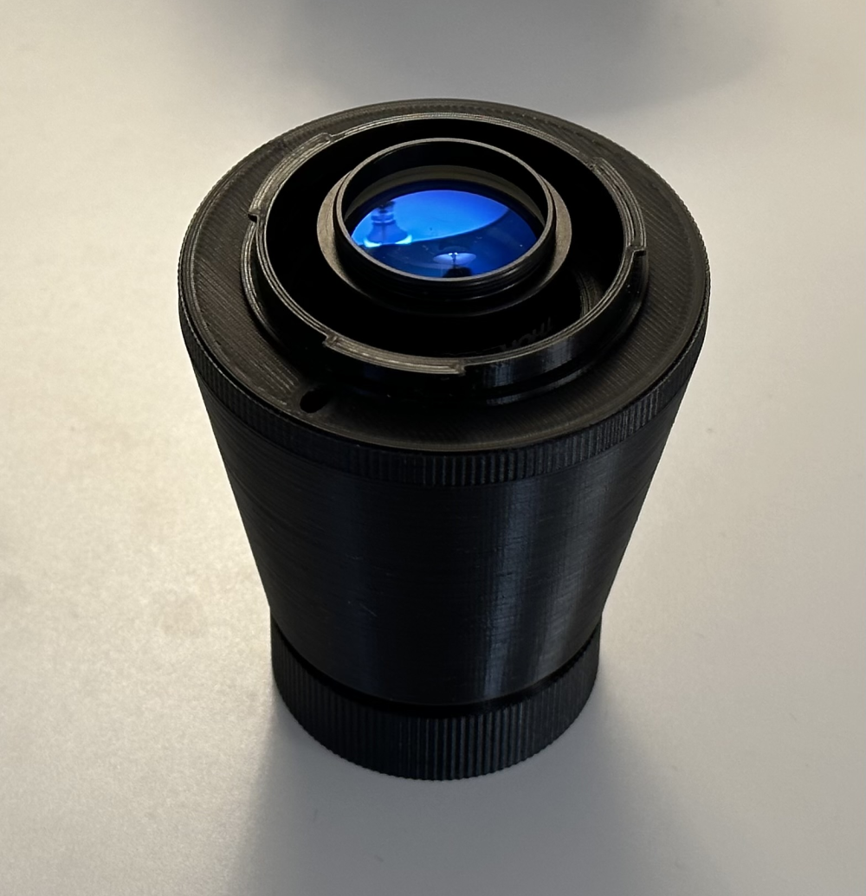
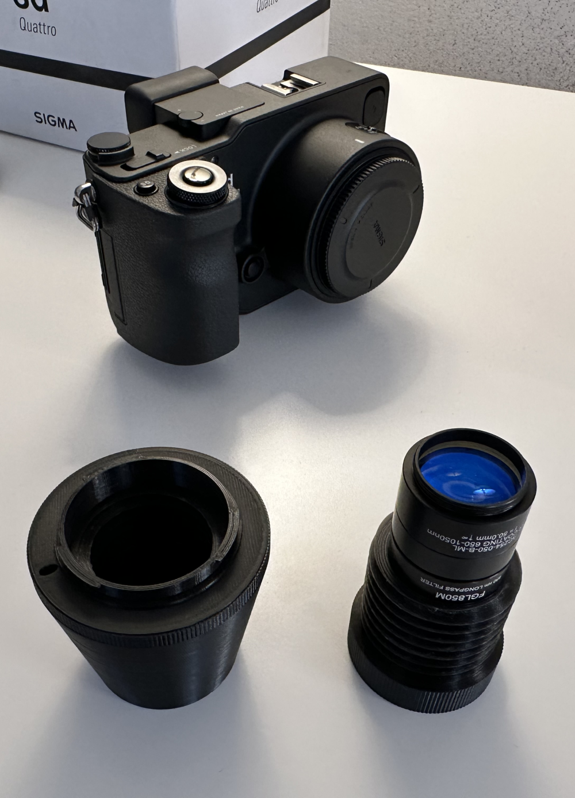
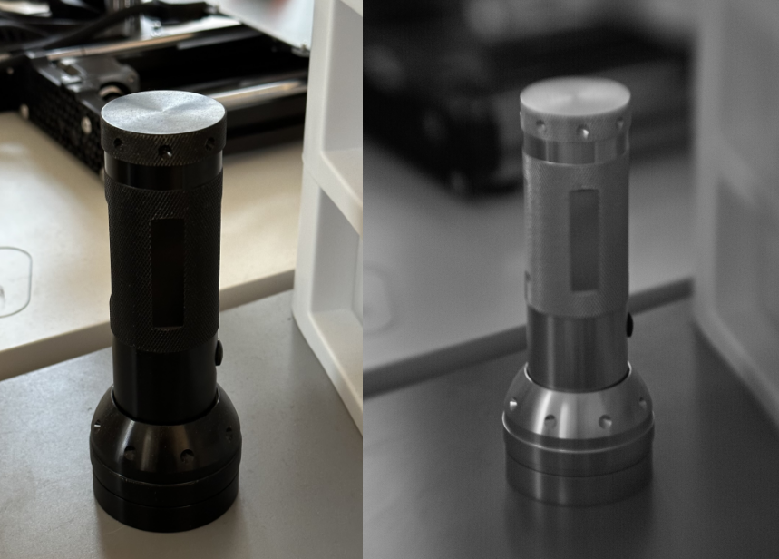
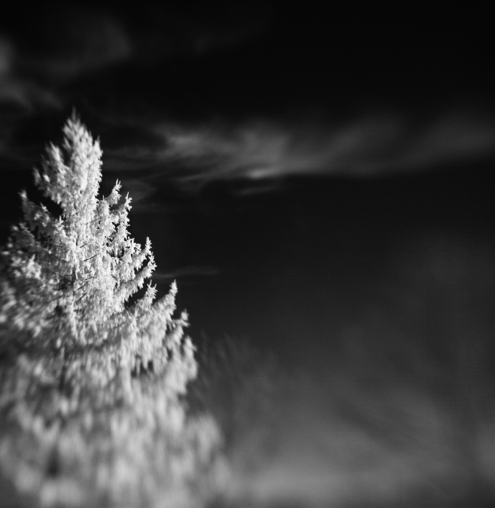
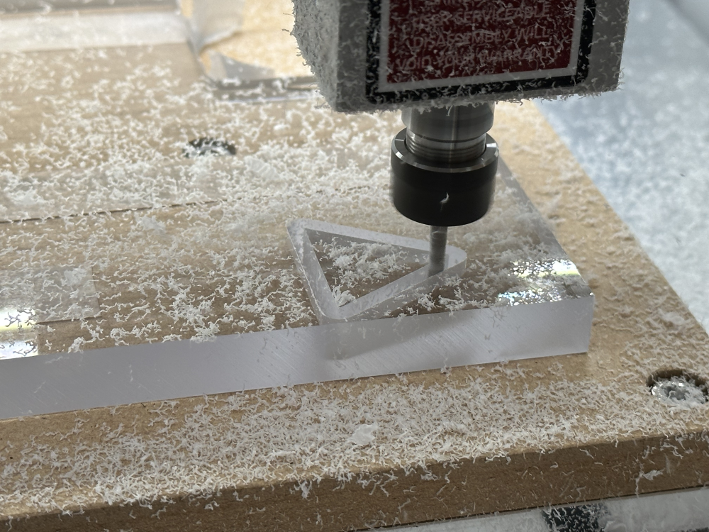
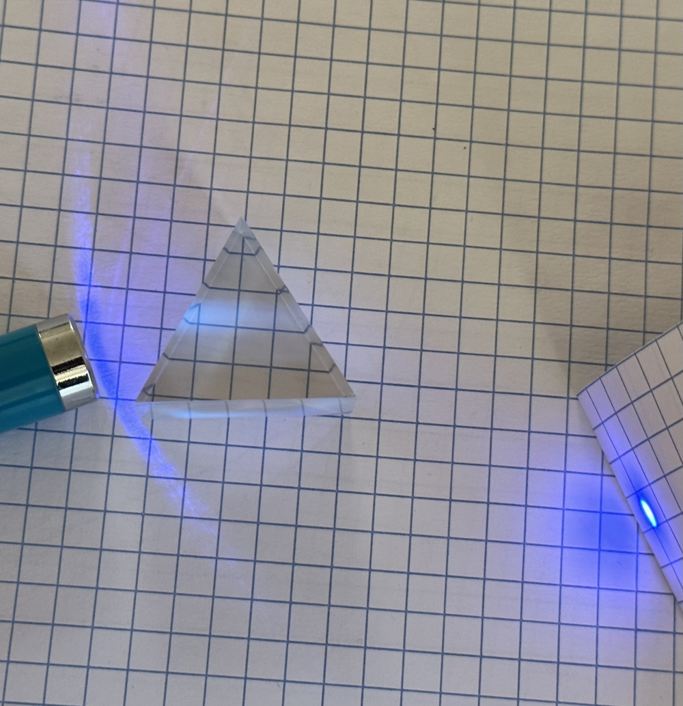
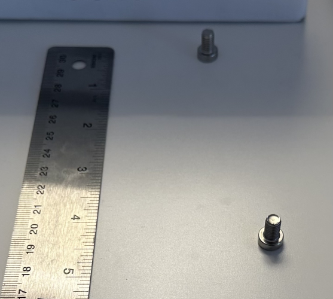
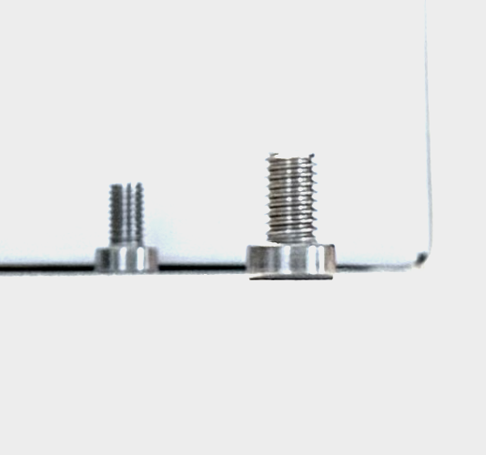
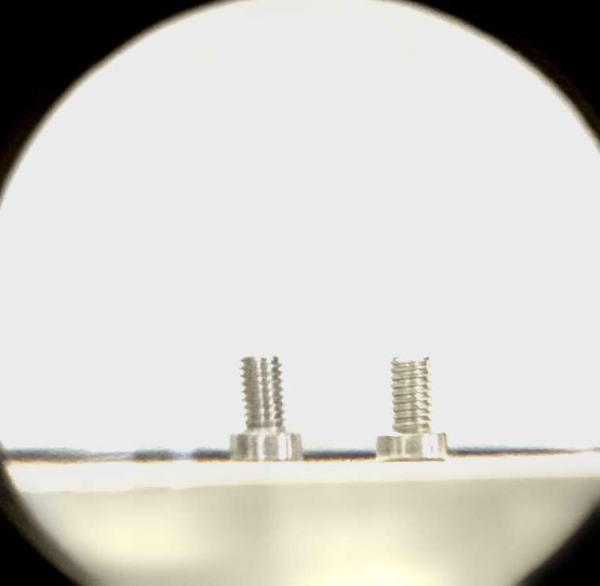
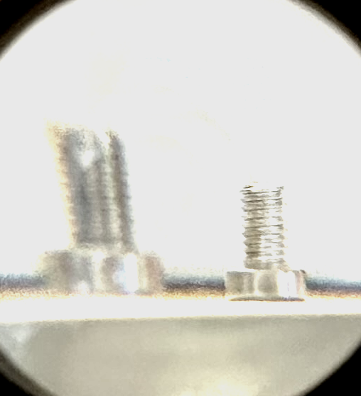

Foveon Near Infrared Photography, a Polycarbonate Prism, and Telecentric Optics
Alex Bock 2023-01-02
Foveon Near Infrared Photography
I designed and 3D-printed a Sigma SA locking mount adapter and a lens body to mount and focus a near infrared achromatic doublet on an SD Quattro camera with a Foveon image sensor. The reflection in the lens is a vibrant blue due to the near infrared anti-reflective coating.
Along with the unique sensor design, the SD Quattro is also unusual in allowing easy removal of the built-in infrared-blocking filter. Virtually every color digital camera has a filter to block infrared light because silicon sensors are inherently sensitive to near infrared light which would distort color perception, but in most cameras the filter is permanently adhered to the sensor.
This camera is sensitive enough to near infrared to allow handheld indoor photography with an 850 nm longpass filter, and outdoor tripod photography with a 1000 nm longpass filter. Due to silicon's low quantum efficiency beyond 1000 nm, the latter filter is a dielectric longpass filter with high transmission and a very sharp cut-on at 1000 nm (Thorlabs FELH1000).
 The first thing I noticed looking around indoors with the 850 nm longpass filter was that a black anodized aluminum flashlight had the appearance of a bare, reflective metal surface in infrared (left: visible light, right: near infrared 850 nm longpass):
Looking outside with the 1000 nm longpass filter, a pine tree appears bright white against a black sky (note that the narrow depth of field is due to imaging with a single achromatic doublet wide open at f/2):
Polycarbonate Prism
I milled and polished an equilateral dispersing prism out of polycarbonate for a future project to measure the material's Abbe number.
 Telecentric Optics
Holding an ordinary magnifying glass far in front of a phone camera creates a simple telecentric optical system where objects at different distances from the camera can be made to appear the same size, or more distant objects can be made to appear larger than closer objects.
Scene:
Normal photo (endocentric):
Telecentric view:
Hypercentric view:
Back to Index